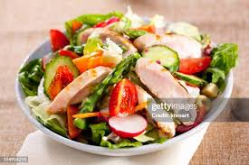
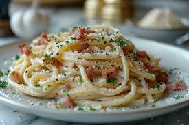
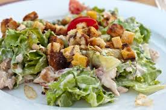
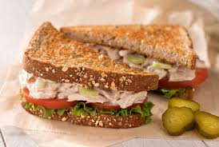
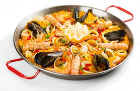

| Almuerzo | Cena | |
|---|---|---|
| Lunes |
 Ensalada de Pollo Pollo a la plancha sobre lechuga, tomate y aguacate. |
Pizza Margherita Pizza con tomate, mozzarella y albahaca. |
| Martes |
 Espaguetis Carbonara Pasta con crema, panceta y parmesano. |
 Ensalada César Lechuga romana con aderezo y crutones. |
| Miercoles |
Sopa de Verduras Variedad de verduras frescas en caldo de pollo. |
 Sándwich de Atún Pan integral con atún, lechuga y tomate. |
| Jueves |
 Paella de Mariscos Arroz con mariscos frescos, azafrán y vegetales. |
 Crepes de Jamón y Queso Crepes rellenas de jamón y queso fundido. |
| Viernes |
Tacos de Carne Tortillas con carne de res, cebolla y cilantro. |
Brochetas de Verduras Pimientos, calabacín y cebolla a la parrilla. |